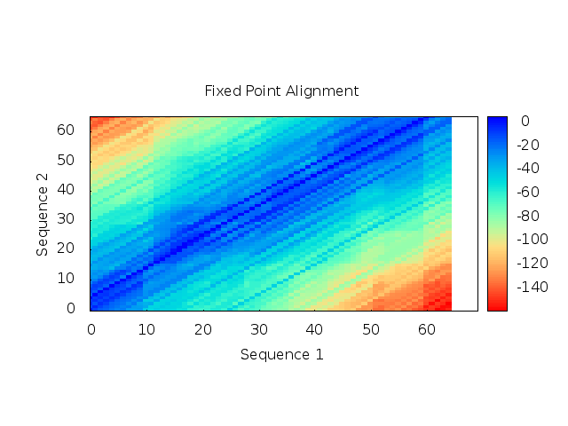
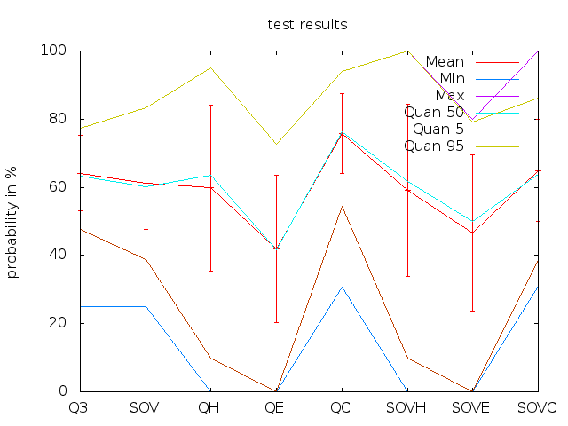
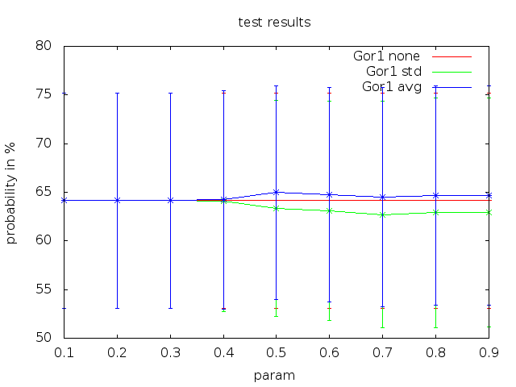
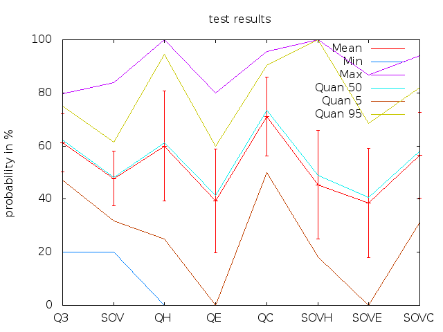
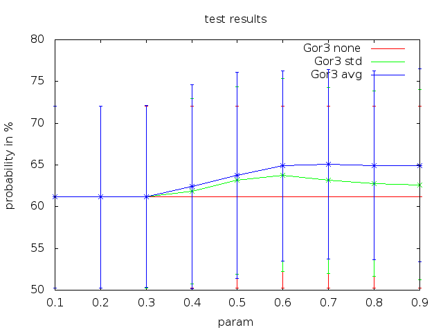
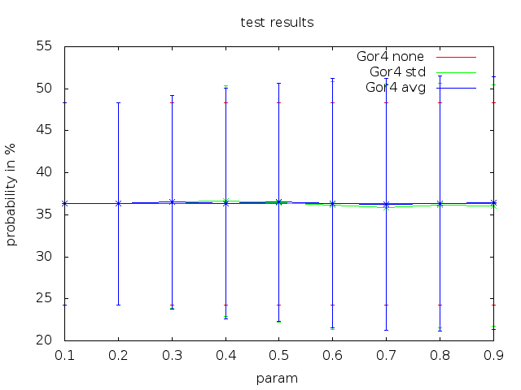

Programmierpraktikum
WS 2012/13
by Rene Schoeffel, Uli Köhler, Yann Spöri and Tobias Harrer
Alignments
Dynamic vs Recursive algorithm

Fixpoint alignment
Secundary Structure Prediction
GOR I validation (windowsize: 17; no postprocessing)

GOR I comparisation of diffrent windowsizes

GOR I postprocessing validation

GOR III validation (windowsize: 17; no postprocessing)

GOR III compapresentation/risation of diffrent windowsizes

GOR III postprocessing validation

GOR IV validation (windowsize: 17; no postprocessing)
GOR IV comparisation of diffrent windowsizes

GOR IV postprocessing validation

Validation
Sensitivity versus Specificity

Sensitivity versus Specificity

Sensitivity versus Specificity

CB513

Website
Used technologies
- JQuery and JQuery UI
(UI Proof of Concept) - Ajax Technologie
(incl. asynchronous system architecture) - Reveal JS
- Persistent data handling